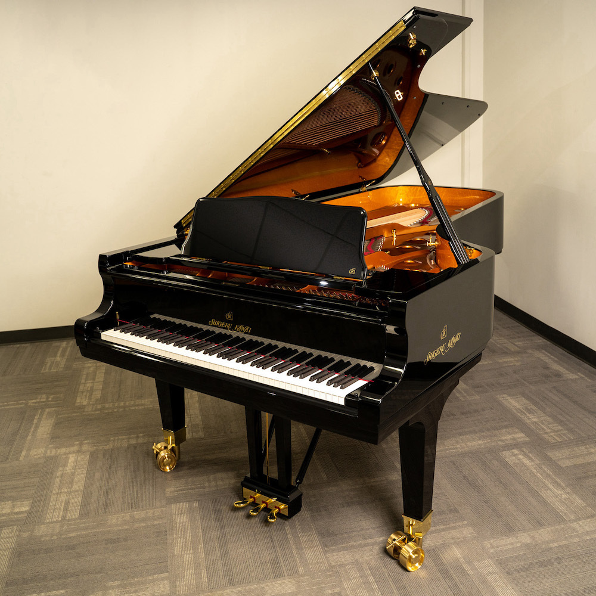

Joel Dixon
Highly motivated student with strong work ethic and ability to work independently. Exemplary organizational and team collaboration skills with experience in improving processes while working to acquire new knowledge as I offer my skills in a growth-oriented and professional environment.t offers a dynamic and creative outlet for me to bring my ideas to life in a digital space. The ability to craft interactive and visually appealing websites is incredibly empowering. It allows me to blend design aesthetics with functionality, creating user experiences that are both seamless and engaging.
